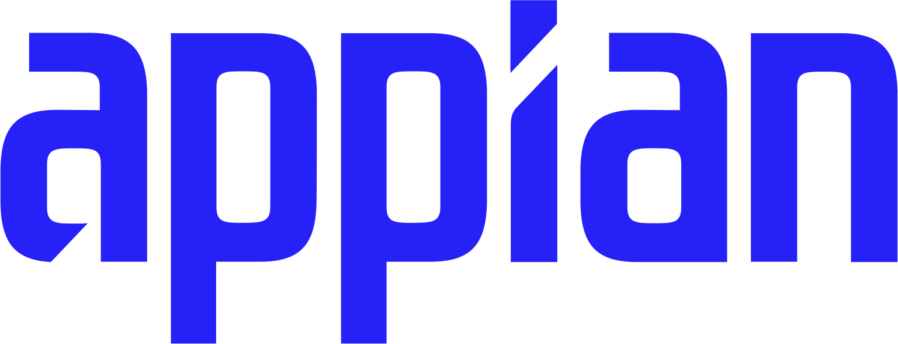

Claude Max
A Claude Max subscription provides access to Claude Code for this workflow.
Get Claude Max ↗
A beginner-friendly playbook for translating Figma Make and React into native, working SAIL applications.
Arrange these prerequisites before installing anything. The workflow supports macOS, Windows, and Linux.
A Claude Max subscription provides access to Claude Code for this workflow.
Get Claude Max ↗A minimum Professional plan with a Full seat is required for the Figma Make workflow.
View Figma pricing ↗Designer access, object-creation permission, and Appian Developer MCP enabled.
If you are an SSC, obtain approval before using Claude.
Open AI Tool Access Request ↗Your choice is saved and every command block below updates automatically.
Skills, official documentation, repositories, and reusable AI resources.
High-fidelity translation and screenshot convergence.
Download SKILL.mdAppian skills and references for Developer MCP.
Open repository ↗Current setup and capability documentation.
Read docs ↗Installation, authentication, and diagnostics.
Read docs ↗Open the ready-made Gem and turn discovery transcripts into a consistent prototype brief.
Open the Gem ↗Persistent guardrails for each Figma-to-Appian workspace.
Download templateGoogle’s guide to effective Gem instructions.
Open guide ↗Open the symptom that matches what you see.
Translate the source into the closest technically achievable native SAIL experience.
Get the translation skill